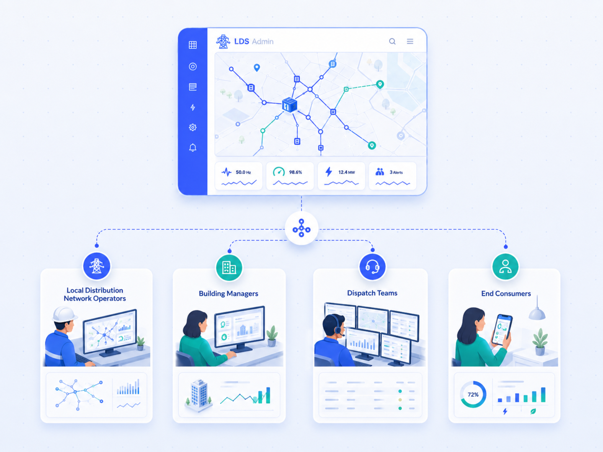

LDN operators
Monitoring, GIS records, events, metering and reporting for daily network operations.
Different roles need different detail, but the same source of truth. LDS Admin connects management overview, technical context and customer information.

Each team sees the detail they need without losing shared context.
Monitoring, GIS records, events, metering and reporting for daily network operations.
Energy overview, inspections, documents and supply points across managed buildings.
Current network status, abnormalities, incidents and field-work coordination.
Tasks, protocols, inspections and intervention history tied to a specific device.
Contacts, contracts, documents and information for faster customer responses.
Selected information and services through a customer portal according to project scope.
Contact us and we will review the right deployment, integrations and next steps for your teams.